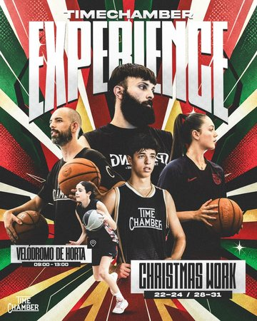

01
Setmana 1
22, 23 i 24 de desembre
222324
De dimarts a dijous. Tres matins per afinar fonaments abans de Nadal.
96 €· 09:00 – 13:00
Time Chamber per Nadal: el campus d'Iandrey Panisa per tancar l'any entrenant com els professionals. Tecnificacions de bàsquet de veritat a Barcelona.

Dues setmanes: del 22 al 24 de desembre (96 €) i del 28 al 31 de desembre (128 €), de 9:00 a 13:00. Les dues setmanes juntes costen 179 €. Velòdrom d'Horta · Passeig de la Vall d'Hebron, 185-201, 08035 Barcelona.
Dues setmanes: del 22 al 24 de desembre (96 €) i del 28 al 31 de desembre (128 €), de 9:00 a 13:00. Les dues setmanes juntes costen 179 €. Mateix horari, mateixa pista, mateix nivell d'exigència.
De dimarts a dijous. Tres matins per afinar fonaments abans de Nadal.
De dilluns a dijous. Quatre matins per tancar l'any a la pista.
Les dues setmanes (7 dies): 179 €
Apuntar-m'hiEl mateix mètode amb què Coach Iandrey Panisa prepara jugadors ACB, Eurolliga i NBA, adaptat a cada edat.
Control de pilota sota pressió, canvis de ritme i lectura.
Mecànica, peus i repeticions de qualitat.
Avantatges, finalitzacions i presa de decisions.
Exigència, hàbits i competir cada repetició.
Sessió de tecnificació individual amb un jugador professional. Al campus es treballa amb el mateix mètode, adaptat a cada edat.
Time Chamber és el centre de tecnificació de bàsquet de Coach Iandrey Panisa a Barcelona. L'Iandrey ha treballat la tecnificació individual de jugadors professionals com Serge Ibaka, Jarred Vanderbilt i Willy Hernangómez, i aplica el mateix mètode, adaptat per edats, als seus campus i tecnificacions.
Vídeos →Dues setmanes de tecnificacions de bàsquet per Nadal, de 9:00 a 13:00, al Velòdrom d'Horta.
Veure més →The House of the Real Hoopers: qui som, com entrenem i vídeos de professionals treballant amb Coach Iandrey.
Veure més →On és, com arribar-hi i què cal portar.
Veure més →El que diuen els mitjans i les famílies. Tot enllaçat a la font original.
Veure més →Tot el que pregunten les famílies, respost en clar.
Veure més →Places limitades. Omple el formulari i et contactem per confirmar la plaça i el pagament.
Veure més →Actualitzat: 18 de novembre de 2026 · Font: Time Chamber
Sí. Time Chamber organitza Christmas Work, un campus de bàsquet de Nadal a Barcelona: set matins de tecnificació del 22 al 24 i del 28 al 31 de desembre de 2026, de 9:00 a 13:00, al Velòdrom d'Horta. Es pot fer una setmana (96 € o 128 €) o totes dues (179 €).
Hi ha dues setmanes: la setmana 1 és el 22, 23 i 24 de desembre (de dimarts a dijous) i la setmana 2 del 28 al 31 de desembre (de dilluns a dijous). L'horari és de 9:00 a 13:00 cada dia. Es pot fer una sola setmana o totes dues.
Sí. El campus de Nadal es fa al Velòdrom d'Horta, al Passeig de la Vall d'Hebron, districte d'Horta-Guinardó, Barcelona. És una de les seus habituals d'entrenament de Time Chamber a la ciutat.
La setmana 1 (3 dies) costa 96 €, la setmana 2 (4 dies) costa 128 € i les dues setmanes juntes (7 dies) costen 179 €. La plaça es reserva amb el formulari d'aquesta pàgina i l'equip de Time Chamber contacta després per confirmar el pagament.
Surt a 32 € per matí si es fa una sola setmana: 96 € la setmana 1 (3 dies) i 128 € la setmana 2 (4 dies). Les dues setmanes juntes costen 179 € per 7 dies, uns 25,60 € per matí, 45 € menys que pagar-les per separat.
Les places són limitades i s'assignen per ordre de pagament.